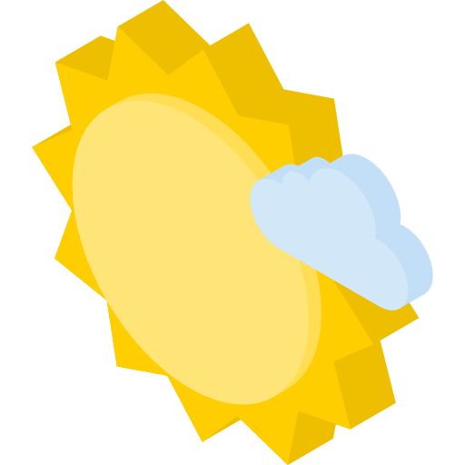

<ion-header>
  <ion-toolbar>
    <ion-buttons slot="start">
      <ion-button>
        <ion-icon name="menu-outline"></ion-icon>
      </ion-button>
    </ion-buttons>
    <ion-title class="ion-text-center">Clima<span>Tempo</span></ion-title>
    <ion-buttons slot="end">
      <ion-button>
        <ion-icon name="search-outline"></ion-icon>
      </ion-button>
    </ion-buttons>
  </ion-toolbar>
</ion-header>

<ion-content>
  <ion-segment value="today">
    <ion-segment-button value="today">Hoje</ion-segment-button>
    <ion-segment-button value="tomorrow">Amanhã</ion-segment-button>
    <ion-segment-button value="nextDays">15 dias</ion-segment-button>
  </ion-segment>

  <main>
    <div class="cidade">
      
      <h4>{{result.city}}</h4>
    </div>
    <div class="imagem-tempo">
      
    </div>
    <div class="maxmin">
      <ion-icon name="arrow-up-outline" class="max"></ion-icon>
      <div>{{result.forecast[0].max}}º</div>
      <ion-icon name="arrow-down-outline" class="min"></ion-icon>
      <div>{{result.forecast[0].min}}º</div>
    </div>
    <div class="temperatura">{{result.temp}}</div>
  </main>
  <br>
  <br>
  <div class="clima">
    <div class="info borda-direita">
      
      <div>Vento</div>
      <div>{{result.wind_speedy}}%</div>
    </div>

    <div class="info borda-direita">
      
      <div>Umidade</div>
      <div>{{result.humidity}}%</div>
    </div>

    <div class="info">
      
      <div>{{result.sunrise}}</div>
      <div>{{result.sunset}}</div>
    </div>
  </div>
  <br>
  <br>
  <div class="ph">
    <h2>Próximas dias</h2>
  </div>

  <div class="proximas-horas">
    <div class="hora" *ngFor="let i of [1, 2, 3, 4]">
      <div>{{result.forecast[1].date}}</div>
      
      <div class="previsao">
        <ion-icon name="arrow-up-outline" class="max"></ion-icon>
        {{result.forecast[1].max}}°
      </div>
      <div class="previsao">
        <ion-icon name="arrow-down-outline" class="min"></ion-icon>
        {{result.forecast[1].min}}°
      </div>
    </div>
  </div>
</ion-content>